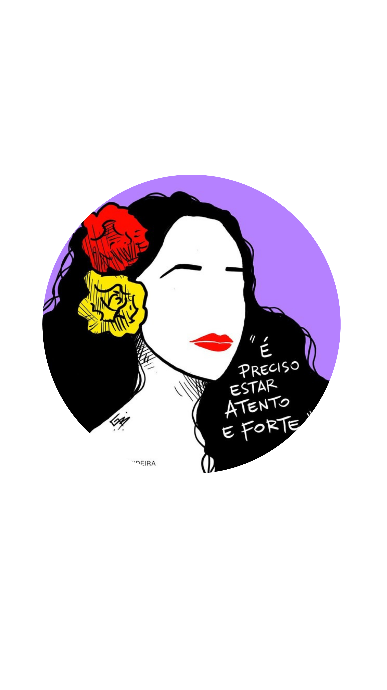

Apresentação
Por: Barbára Emmerick
Olá!, como uma grande fã da Gal Costa e alguém apaixonada pela nossa MPB, trouxe aqui um breve resumo com algumas curiosidades sobre essa cantora inesquecível. Espero que goste!

Por: Barbára Emmerick
Olá!, como uma grande fã da Gal Costa e alguém apaixonada pela nossa MPB, trouxe aqui um breve resumo com algumas curiosidades sobre essa cantora inesquecível. Espero que goste!
(De Maria da Graça a Gal)
ÉRegistrada como Maria da Graça Costa Penna Burgos, ela iniciou a carreira com seu nome real antes de adotar o apelido "Gal" por sugestão do produtor Guilherme Araújo.
(A música ouvida no berço)
A mãe de Gal ouvia horas de música clássica durante a gestação para estimular o talento da filha, hábito que acabou moldando a relação da cantora com a música desde o berço.
(A revolução na MPB)
Gal foi a principal voz feminina do movimento Tropicalista no final dos anos 1960. Com um visual ousado, cabelos volumosos e uma postura rebelde, ela deu voz a hinos como "Baby" e "Divino Maravilhoso",marcando a história da música e da moda no Brasil.
(O alcance vocal incrível)
Conhecida por um alcance vocal impressionante,Gal conseguia afinar notas agudíssimas com perfeita precisão. Ficou famosa por "duelar" no palco com a guitarra elétrica do músico Pepeu Gomes, alcançando com a voz exatamente a mesma nota e intensidade do instrumento.